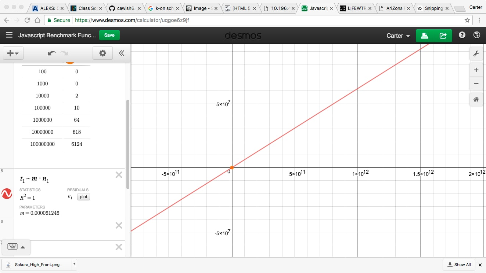

I wrote a JavaScript Benchmark that explores how time to store to data scales with the ammount of data. My research shows that the time prefromance is linear within my domain. In computing, a benchmark is the act of running a computer program, a set of programs, or other operations, in order to assess the relative performance of an object, normally by running a number of standard tests and trials against it. This perticular benchmark was about memory storage within a certain ammount of time. 